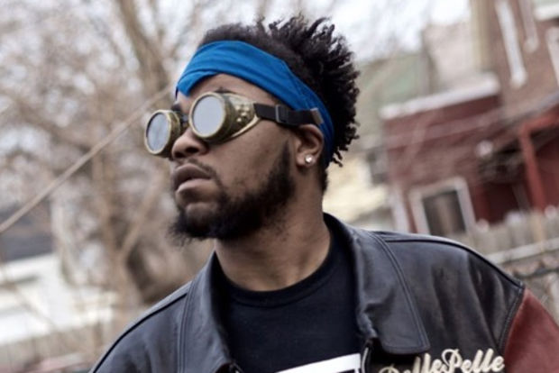

John Walt

"Just another day in the ghetto, all the street bring is sorrow."
John Walt was known as one of the founding members of the PIVOT Gang (Chicago's Westside Boy Band), along with his cousins Saba and Joseph Chilliams, friends MfnMelo and Frsh Waters. He was well known and loved in the Chicago music community.
Click Here To View The John Walt Foundation: JWF